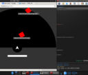
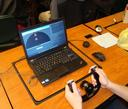
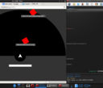
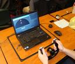

HAM-3R is an abstract game about doing three things at once. Enemies (red squares) appear in a semicircle around the player's ship. They can be defeated by clicking on them, aiming and shooting at them, or by typing the words that appear above them. However, if you rely on one method of attack, it will become much harder. Every time the mouse is clicked, subsequent enemies become smaller. Each time the beam is fired, it becomes narrower. When words are typed, incoming enemies get longer and longer words.
HAM-3R was created for Global Game Jam 2014. It was very well received, with other GGJ participants interrupting my progress to play it for themselves (which was always welcome). The game is intended to be played with a steering wheel, but it works fine with just a mouse and keyboard. The game was developed before any of my browsers had gamepad support, so using a wheel requires a Linux (or possibly OSX) server written in node. This server also acts as the highscore table, which is not set up in the online link provided below.
The game was designed and developed by myself, with audio by Matt Strawder.
Videos


Images

 


